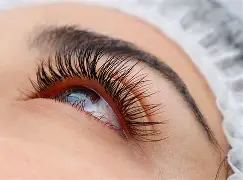

son fibras sintéticas individuales
que se pegan a sus pestañas naturales
de una en una con un pegamento adhesivo.
.
1 MENU PRINCIPAL 
son fibras sintéticas individuales
que se pegan a sus pestañas naturales
de una en una con un pegamento adhesivo.
.